What you will do
- Write down the numbers Teachable Machine gave you.
- Ask Excel to calculate how good your AI is.
- Draw 5 charts: pie, column, line, scatter (XY) and bubble (XYZ).
- Explain what the charts tell you about your AI.
Before you start
- Download the starter file in your language and open it in Excel. If you see “Protected View”, click Enable Editing.
- Your numbers: use your own results, or the example numbers in Part 0.
- Your Excel may be in English, Arabic or Hebrew. Menu names differ, but the buttons and icons look the same — the word list at the end of this guide has all three languages.
- Function names in formulas are always English (SUM, IF …). If a comma
,gives an error, use a semicolon;instead.
0Get your numbers
In Teachable Machine, test one picture at a time. For each picture write the three percentages it shows (Apple, Banana, Orange). You need 12 pictures from Phase 3: apple_01 to apple_04, banana_01 to banana_04 and orange_01 to orange_04.
No model any more, or no time? Use these example numbers:
| Image | Apple | Banana | Orange |
|---|---|---|---|
| apple_01 | 97 | 2 | 1 |
| apple_02 | 91 | 4 | 5 |
| apple_03 | 99 | 0 | 1 |
| apple_04 | 84 | 3 | 13 |
| banana_01 | 3 | 94 | 3 |
| banana_02 | 6 | 88 | 6 |
| banana_03 | 12 | 41 | 47 |
| banana_04 | 4 | 95 | 1 |
| orange_01 | 5 | 2 | 93 |
| orange_02 | 38 | 9 | 53 |
| orange_03 | 61 | 5 | 34 |
| orange_04 | 7 | 3 | 90 |
1Meet the Excel window
Look at the picture and match the numbers to the list under it. Every cell has an address made of a column letter and a row number, like C2.
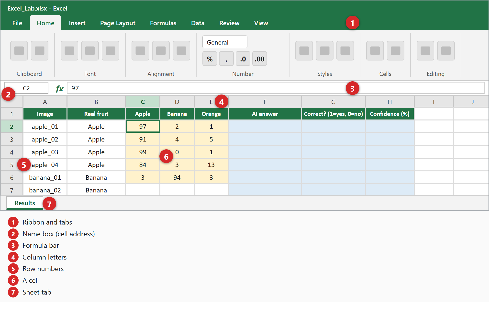
2Type your numbers
- Open the starter file. Yellow cells are where you type numbers.
- Click cell C2, type the Apple % of apple_01, press Tab, type the Banana %, press Tab, type the Orange %, then press Enter.
- Keep going until all 12 rows are done (36 numbers).
- Type only the number — no % sign.
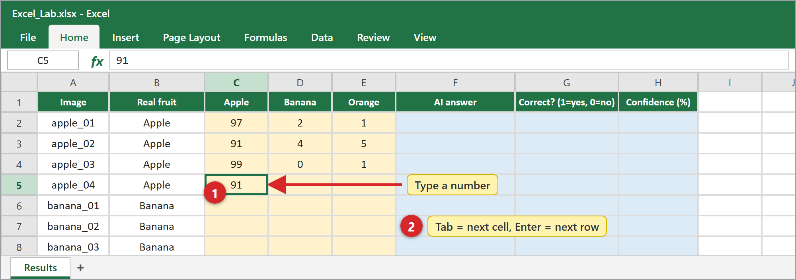
3Let Excel find the AI’s answer
Blue cells are where you type formulas. A formula always starts with =.
Click a formula to copy it
- Click cell F2.
- Type this formula (click it to copy):
=INDEX($C$1:$E$1,MATCH(MAX(C2:E2),C2:E2,0)) - Press Enter. Excel shows the fruit with the biggest percentage.
- In G2 type
=IF(B2=F2,1,0)— it gives 1 when the AI is right and 0 when it is wrong. - In H2 type
=MAX(C2:E2)— this is the AI’s confidence. - Select F2:H2, then drag the small square in the corner (the fill handle) down to row 13. Excel copies the formulas and changes the row numbers for you.
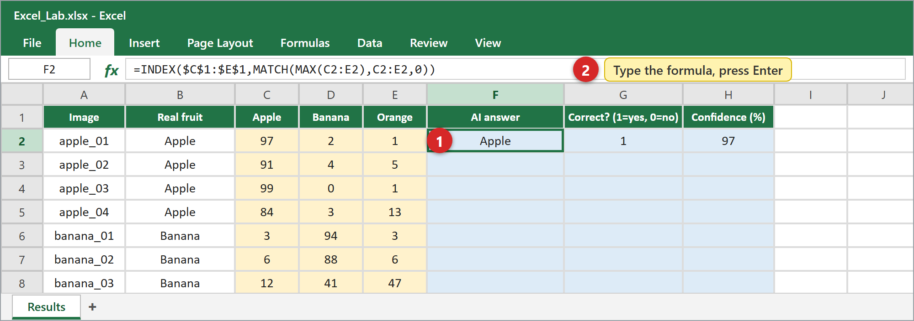
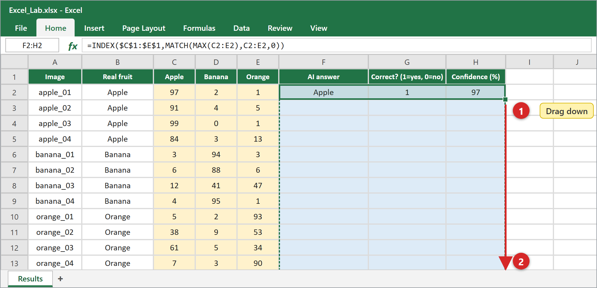
4Count, average and percent
Type these formulas in the blue cells of column K:
| Cell | Formula | What it tells you |
|---|---|---|
| K2 | =COUNT(G2:G13) | How many images |
| K3 | =SUM(G2:G13) | How many answers were correct |
| K4 | =K2-K3 | How many answers were wrong |
| K5 | =K3/K2 | Accuracy = correct ÷ all |
| K6 | =AVERAGE(H2:H13) | Average confidence |
| K7 | =MIN(H2:H13) | Lowest confidence |
| K10 | =AVERAGEIF($B$2:$B$13,J10,$G$2:$G$13) | Accuracy for Apple — then copy it down to K12 |
| K15 | =K5 | Accuracy of phase 3 — then type your accuracy for the other phases in K16:K18 (for example 60%) |
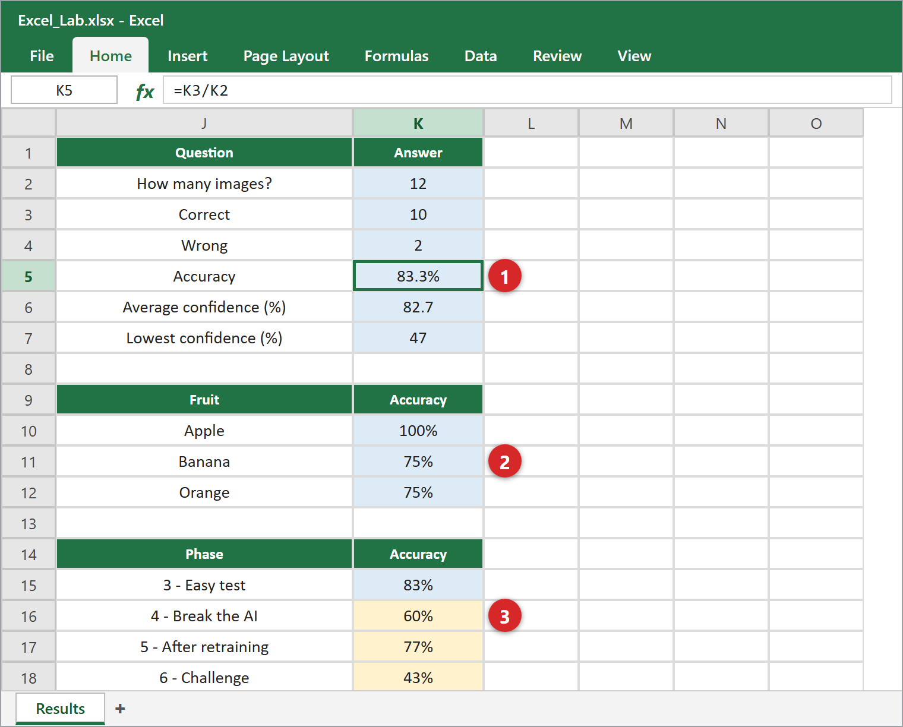
Accuracy in K5 shows as 0.8333. Click cell K5, open the Home tab and click the % button (Percent Style). Do the same for K10:K12 and K15:K18.
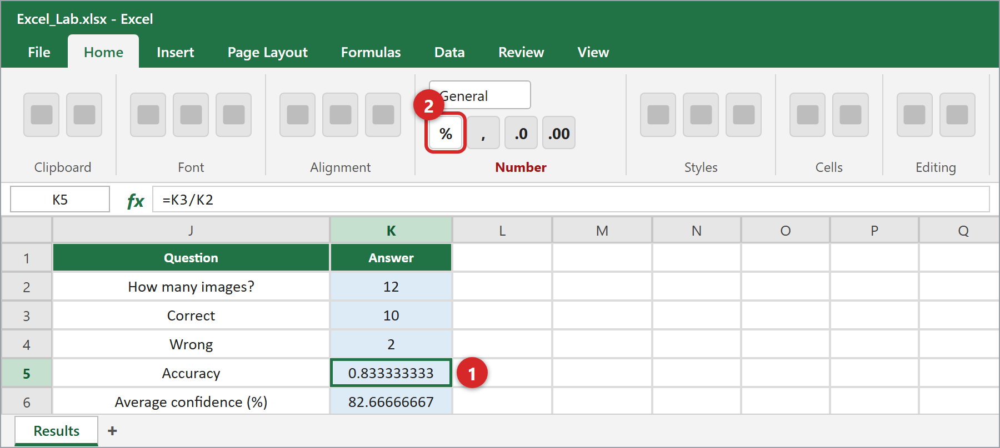
5Draw your charts
It is always the same: ① Select the cells by dragging with the mouse. ② Open the Insert tab and click a chart icon in the Charts group. ③ Excel draws the chart — move it and resize it with the mouse.
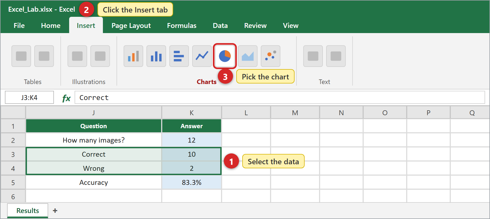
5.1 — Pie chart — correct vs wrong
- Select J3:K4
- Insert → Pie → 2-D Pie
Shows what part of the AI’s answers was correct.
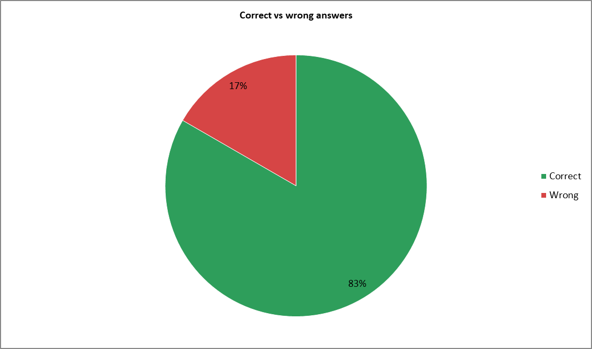
5.2 — Column chart — accuracy for each fruit
- Select J9:K12 (with the header row)
- Insert → Column → the first type (Clustered Column)
Shows which fruit the AI knows best.
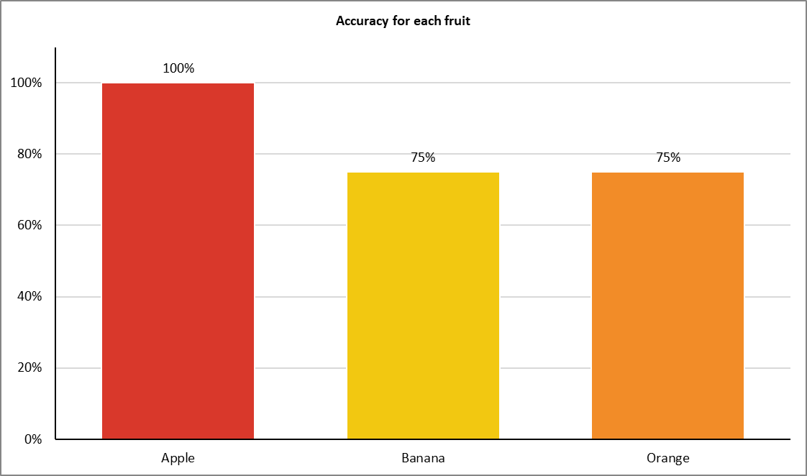
5.3 — Line chart — accuracy across the phases
- Select J14:K18
- Insert → Line → the type with dots on the line (Line with Markers)
Shows whether your AI improved after retraining.
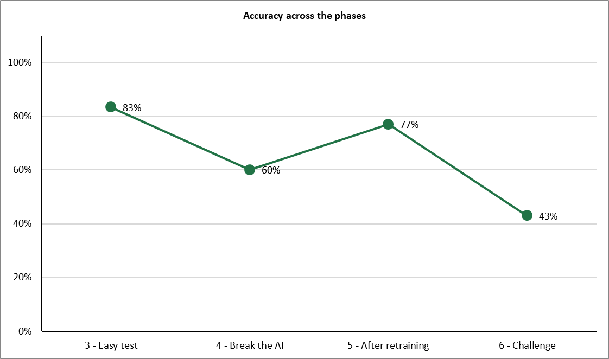
5.4 — Scatter chart (XY) — Apple vs Banana
- Select C1:D13
- Insert → Scatter (X, Y) or Bubble → the first type (dots only)
X axis = Apple %, Y axis = Banana %. Every dot is one picture. As in the picture, apples sit at the bottom right and bananas at the top left, and the oranges stay near the corner (0,0) because both numbers are low. Look for the two dots that wandered away from their group — those are the mistakes. Dots in the middle are pictures the AI is unsure about.
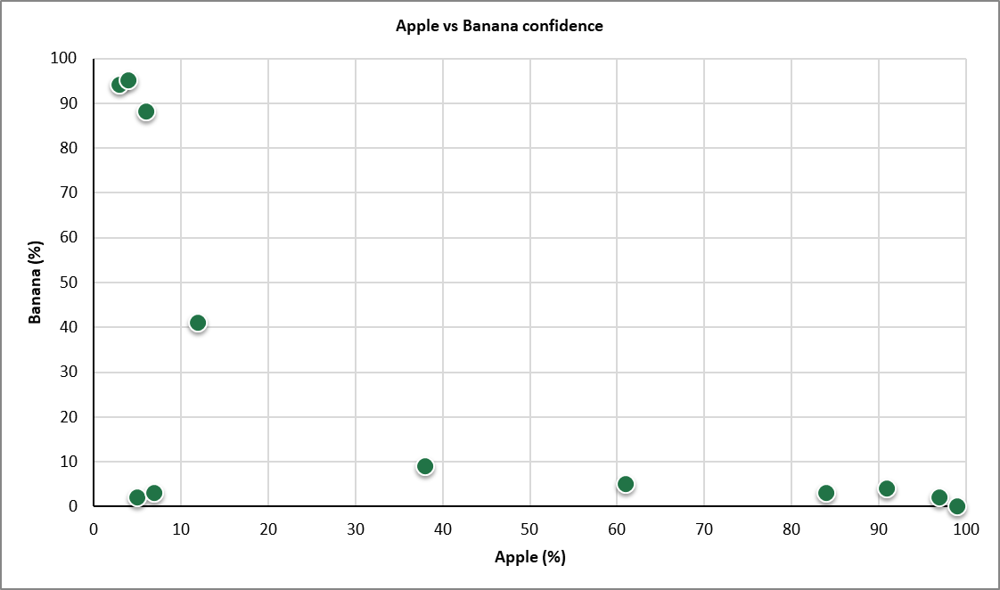
5.5 — Bubble chart (XYZ) — three numbers in one pictureExpert
- Select C2:E13 — this time without the header row (a bubble chart needs numbers only)
- Insert → Scatter (X, Y) or Bubble → Bubble
X = Apple %, Y = Banana %, and the bubble size Z = Orange %. Big bubbles near the bottom left corner are very “orange” pictures.
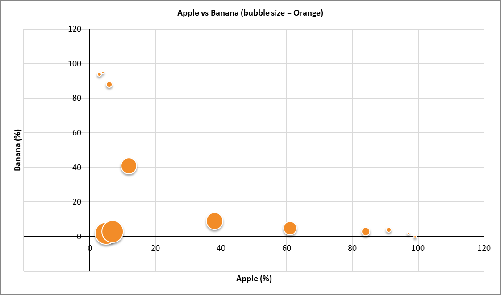
6Make the charts easy to read
- Click the chart so its frame appears.
- Click the + button (Chart Elements) next to it and tick: Chart Title, Axis Titles, Data Labels.
- Click the title text and type your own title.
- To color a bar: click it twice (so only that bar is selected), right-click → Fill → pick a color: red for Apple, yellow for Banana, orange for Orange.
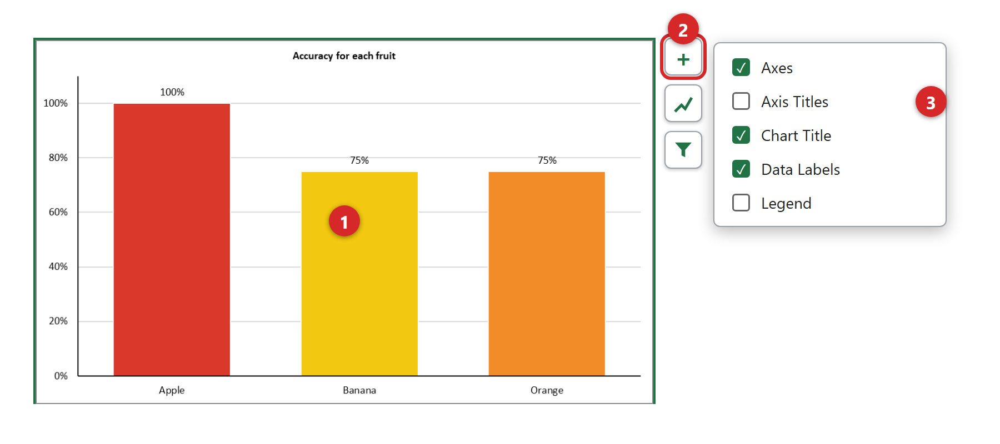
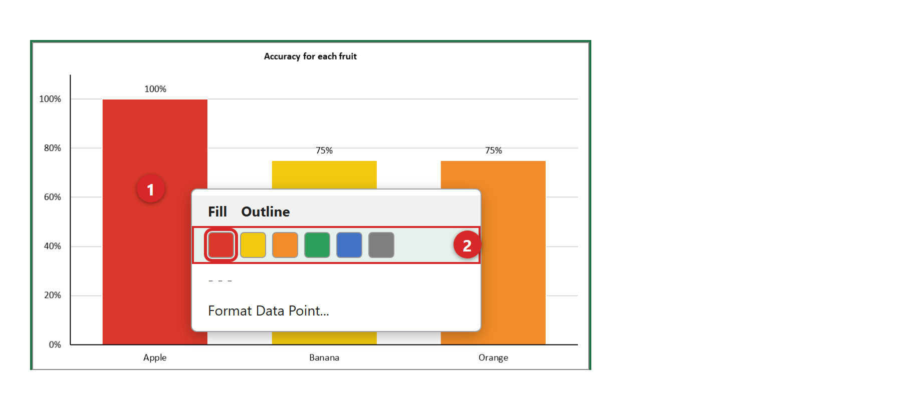
7Build your dashboard
Place the five charts side by side on the sheet (or copy them to a new sheet). Press Ctrl+S to save the file as .xlsx. To put a chart into Word or PowerPoint: click the chart, press Ctrl+C, then Ctrl+V in the other file.
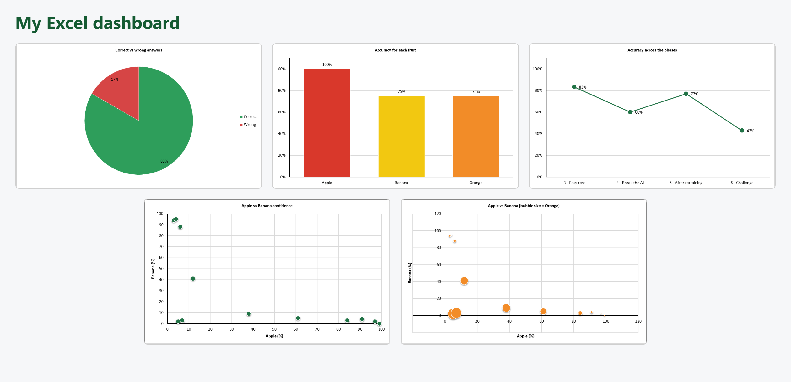
8Think like a data scientist
- What is the accuracy of your AI? Which fruit does it know best, and which worst?
- Look at the pictures with the lowest confidence. Were their answers right or wrong? What does that suggest?
- In the scatter chart: where are the apples, bananas and oranges? Where would a picture that confuses the AI appear?
- In the line chart: what changed after retraining? Why do you think so?
- In the bubble chart: what do the big bubbles mean?
- If you could show your manager only ONE chart, which would you choose, and why?
Write your answers in the EXCEL_RESULTS file.
⭐ Challenges for fast finishers
- Make a column chart that compares the Apple, Banana and Orange % for the first 6 pictures (select A1:A7, then hold Ctrl and select C1:E7).
- Sort the table by confidence: Data tab → Sort. Find the 3 pictures with the lowest confidence.
- Color every confidence below 60 red: Home → Conditional Formatting → Highlight Cells Rules → Less Than…
Words in three languages
| English | العربية | עברית |
|---|---|---|
| Cell | خلية | תא |
| Row | صف | שורה |
| Column | عمود | עמודה |
| Formula | صيغة | נוסחה |
| Formula bar | شريط الصيغة | שורת הנוסחאות |
| Sheet | ورقة عمل | גליון עבודה |
| Home (tab) | الصفحة الرئيسية | בית |
| Insert (tab) | إدراج | הוספה |
| Chart | مخطط | תרשים |
| Pie chart | مخطط دائري | תרשים עוגה |
| Column chart | مخطط عمودي | תרשים עמודות |
| Line chart | مخطط خطي | תרשים קווי |
| Scatter chart (XY) | مخطط مبعثر (XY) | תרשים פיזור (XY) |
| Bubble chart | مخطط فقاعي | תרשים בועות |
| Chart title | عنوان المخطط | כותרת תרשים |
| Axis titles | عناوين المحاور | כותרות צירים |
| Data labels | تسميات البيانات | תוויות נתונים |
| Legend | وسيلة الإيضاح | מקרא |
| Fill handle | مقبض التعبئة | ידית מילוי |
| Percent Style | نمط النسبة المئوية | סגנון אחוזים |
| Accuracy | الدقة | דיוק |
| Confidence | الثقة | ביטחון |
| Undo | تراجع | ביטול פעולה |
| Save | حفظ | שמירה |
Something went wrong?
I see ##### in a cell
The column is too narrow. Double-click the line between two column letters.
The formula shows as text and does not calculate
Check that it starts with = and that the cell format is General, not Text.
I see #NAME?
A function name is misspelled. Check the spelling (in English).
An error appears because of the comma
Some computers use a semicolon ; instead of a comma ,
The chart is empty or looks strange
Select the right cells first, then insert the chart. You can always undo with Ctrl+Z.
The number shows 0.83 instead of 83%
Select the cell and click the % button on the Home tab.